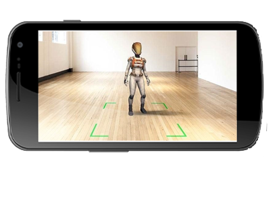
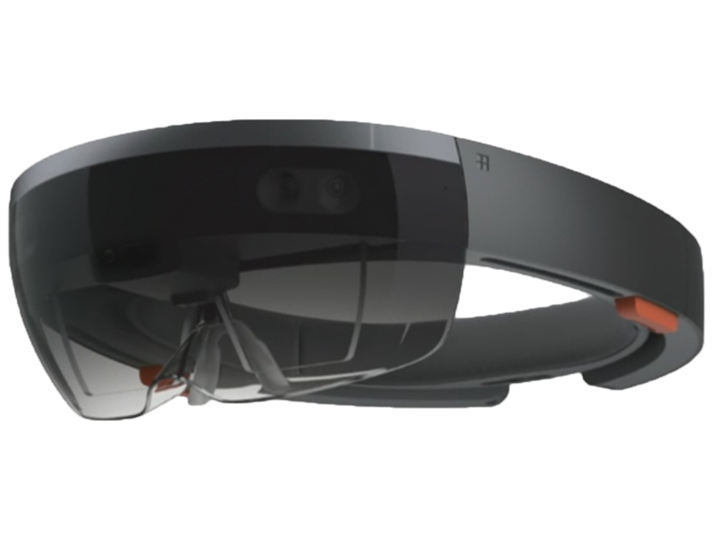

Augmented reality has come a long way from a science-fiction concept to a science-based reality. Until recently the costs of augmented reality were so substantial that designers could only dream of working on design projects that involved it – today things have changed and augmented reality is even available on the mobile handset. That means design for augmented reality is now an option for all shapes and sizes of UX designers.
Augmented reality is a view of the real, physical world in which elements are enhanced by computer-generated input. These inputs may range from sound to video, to graphics to GPS overlays and more. The first conception of augmented reality occurred in a novel by Frank L Baum written in 1901 in which a set of electronic glasses mapped data onto people; it was called a “character marker”. Today, augmented reality is a real thing and not a science-fiction concept.
Major Categories of Augmented Reality


Marker based AR
Ground plane AR
AR Headset
The variety of AR which uses an image as a target on which 3D content is placed . Using computer vision the camera of the device detects the size and orientation of the predefined target and then according to that the size and rotation of the 3D content is decided . The most popular way to implement this is using Unity game dev engine and Vuforia Augmented reality SDK .
Ground plane AR uses three key technologies to implement:
Motion Tracking: it allows the phone to understand its position relative to the world.
Environmental understanding: It allows to detect the size and location of all type of surfaces and planes.
Light Estimation: it allows the phone to estimate the environment’s current lighting conditions.
An augmented reality headset is a specialized, head-mounted display device that provides a simulated visual environment through physical display optic lenses, allowing the user to see both a digital display and the world through the glasses.Augmented reality headsets provide virtual images, videos, animation or informational content to users who wear them.
Geo Location AR
body detection AR
Object detection AR
It refers to augmented reality features that are anchored on real-time location. Digital data is virtually placed over actual physical surroundings, allowing users to access it using AR ready devices such as smartphones. As of now all smartphones already come with location detection capabilities. With the release of Apple’s ARKit and Google’s ARCore, phones that support augmented reality applications are steadily becoming available to consumers everywhere. This will likely lead to more interest and scope for augmented reality geo-location apps.
It is being very famous by the name of AR filters .AR filters are seen on probably on every social platform be it facebook , snapchat or instagram .Custom filters and lenses have a lot of potential in marketing. They enable the creation of AR that can be relevant to specific events, businesses and more. Fun, immersive tools such as these are currently very beneficial, particularly since millennial users have greatly integrated these AR experiences into their daily lives .With this the level of brand engagement increases, generating greater awareness.
This term refers to an ability to identify the form and shape of different objects and their position in space caught by the device’s camera.Object Recognition enables real-time 360° augmented reality experiences around real-world objects pre-defined by you. Scene Recognition, moreover, makes it possible to recognize, track and augment feature-rich rooms, scenes and, larger objects.The idea behind it is very similar to Image Recognition, but instead of recognizing images and planar surfaces, this feature can work with three-dimensional structures and objects.